Programación orientada a objetos
OOP to me means only messaging, local retention and protection and hiding of state-process, and extreme late-binding of all things.
Alan Kay sobre la programación orientada a objetos
Modelado de problemas
Programar es expresar un problema en un lenguaje de programación dado. Modelar representa un paso intermedio en el que se capturan y organizan los aspectos importantes de un problema.
El modelado de un problema es independiente del lenguaje de programación que se elija, pero el lenguaje seleccionado condiciona la facilidad con la que puedes codificar el modelo.
Muchas actividades creativas incluyen modelos intermedios entre la realidad y su expresión en el medio final. Por ejemplo, los storyboards se utilizan para planificar las secuencias de acción: capturan los momentos clave de la secuencia.
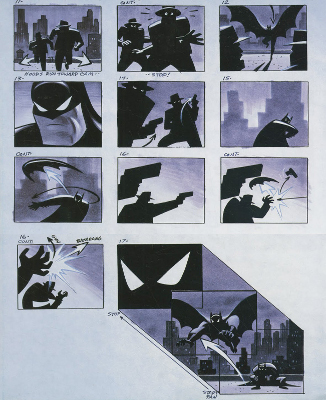
Este mapa muestra el paso de "Ella-Laraña", usado para mantener la coherencia del escenario descrito.

Este es un diseño de un mapa del videojuego Mario. Las herramientas digitales han permitido la automatización de modelos en software.

Y aquí el diagrama de flujo de cómo se llaman las distintas funciones de un script de Unity.
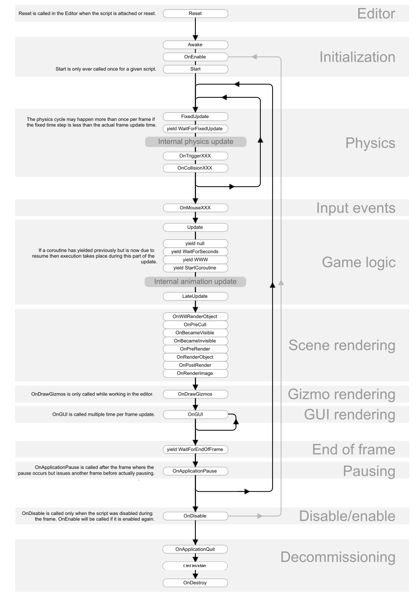
La programación orientada a objetos es una técnica de modelado de problemas que pone especial énfasis en dos conceptos: objetos y paso de mensajes.
Objetos
Los objetos son representaciones de los aspectos de un problema que desempeñan un rol específico, exponen un conjunto de funcionalidad concreta –la API–, y además, ocultan cómo realizan esa funcionalidad.
Paso de mensajes
Los mensajes son peticiones de acción de un objeto a otro. Estas peticiones parten de un objeto remitente hacia un objeto destinatario y codifican qué funcionalidad de la API se precisa.
Modelado orientado a objetos
La definición de objetos y las interacciones entre los mismos modelan el problema. A lo largo de esta sección modelaremos informalmente el videojuego Space Invaders.

Identificando objetos
Una técnica para identificar objetos consiste en poner nombres.
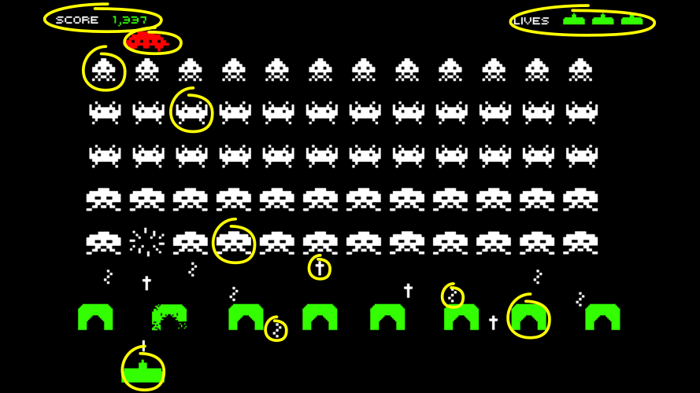
Estos son algunos objetos a los que podrías poner un nombre: nave amiga, enemigo 1, enemigo 2, enemigo 3, disparo amigo, disparo enemigo 1, disparo enemigo 2, defensa 1, defensa 2, marcador de vidas, marcador de puntuación.
Tipos de objetos e instancias
Queda claro de un vistazo que muchos objetos concretos pertenecen a familias o tipos de objetos. Conviene recordar que también se los llama clases.
Los tipos especifican propiedades y comportamientos comunes a todos ellos aunque individualmente sean distintos.
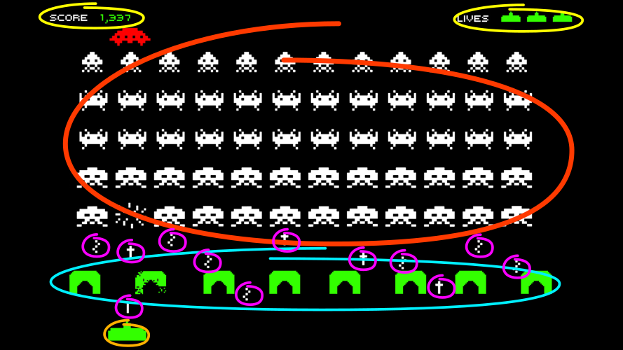
Algunos tipos que podrías identificar son marcadores, escudos, nave amiga, enemigos y disparos.
Los valores de un tipo son cada uno de los objetos individuales. El enemigo especial, así como cada uno de los otros enemigos será un valor distinto del tipo enemigo.
Cuando utilices la terminología de clases, los valores se convertirán en instancias de la clase.
En los modelos de objetos es más conveniente trabajar con tipos de objetos.
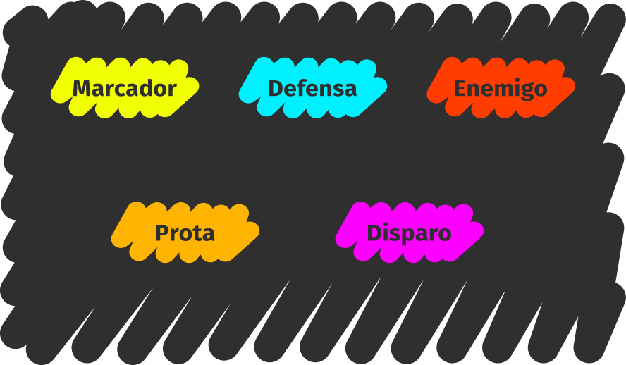
Interfaces y métodos
Para tratar de determinar la API de los tipos de objetos puedes guíarte por las interacciones propias del juego.
Un ejemplo:
Los enemigos se mueven todos juntos hacia un lado, avanzan una línea y se mueven hacia el otro lado mientras disparan aleatoriamente.
La técnica consiste en buscar verbos esta vez: moverse, avanzar y disparar, por ejemplo.
Para poder implementar el comportamiento de los enemigos, estos tienen que poder moverse hacia los lados, avanzar y disparar. Así, tendrán que permitir que les envíen mensajes pidiendo alguna de estas operaciones.
A las acciones que puede realizar un objeto se las denomina métodos.
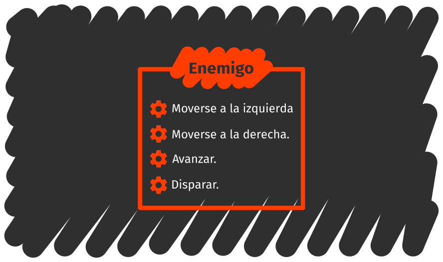
Estado y atributos
Los objetos no sólo pueden realizar acciones, sino que además capturan características de las entidades a las que representan.
Cada enemigo, por ejemplo, tiene un gráfico distinto, una puntuación diferente, una posición en pantalla y además recordará en qué dirección se estaba moviendo.
El estado no se suele exponer de forma directa en la API. Piensa en el caso de los enemigos: incluso si estos tienen una posición, es preferible tener métodos específicos con los que manipular la posición (como "mover a la izquierda" o "mover a la derecha") en lugar de dar libre acceso a la posición.
A las características de un objeto se las denomina atributos.
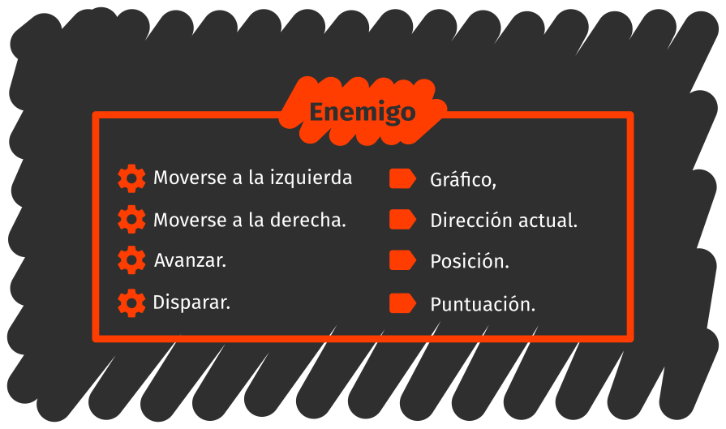
El proceso de modelado es iterativo: al definir algunas acciones, se introducen nuevos nombres como posición o dirección, que se convertirán a su vez en nuevos tipos de objetos.
Constructores y creación de objetos
Pensemos ahora en la interacción del disparo:
Cuando el jugador pulsa el botón de disparo, aparece un proyectil delante de la nave amiga que avanza hasta alcanzar la parte superior de la pantalla o colisionar con un enemigo.
El proyectil no estaba ahí antes y tendrá que ser creado en el momento del disparo.
Otro ejemplo, la preparación del nivel antes de jugar:
Aparecen 55 enemigos en pantalla, 5 filas de 11 enemigos con la siguiente configuración: una fila de enemigos de la especie 1, dos filas de la especie 2, una de la especie 3 y una de la especie 4.
Está claro que no queremos escribir los 55 enemigos individualmente. Además, dado que todos pertenecen al tipo enemigo, también es evidente que serán todos muy parecidos.
Lo que se necesita es un mecanismo de generación automática de objetos. Cada lenguaje ofrece formas distintas de crear objetos.
Un mecanismo útil es el de contar con un nuevo objeto el constructor, cuya tarea es la de generar objetos de un tipo dado. Habrá pues un constructor por tipo.
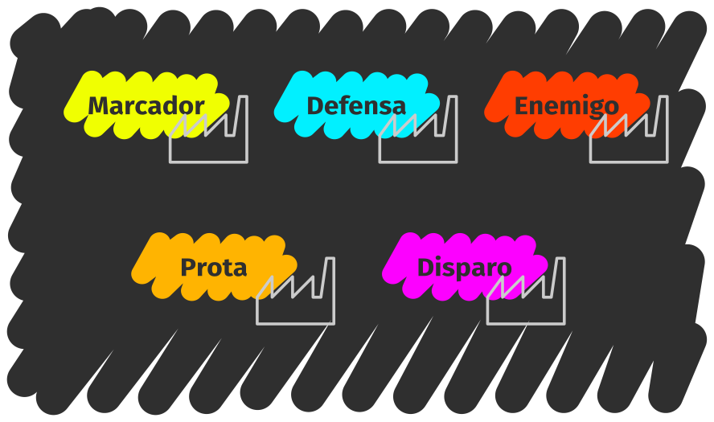
Los constructores tienen una API muy sencilla: nuevo objeto. Este método crea un nuevo objeto de un tipo dado.
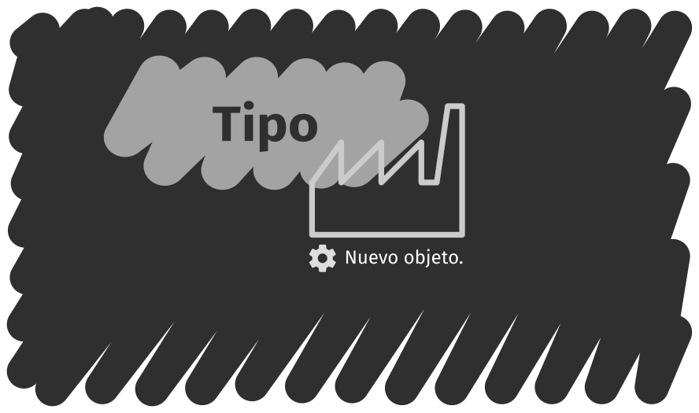
Los constructores suelen permitir personalizar partes del objeto que están creando de forma que se le pueda decir algo como "crea un disparo con esta posición, este gráfico y esta dirección de avance".
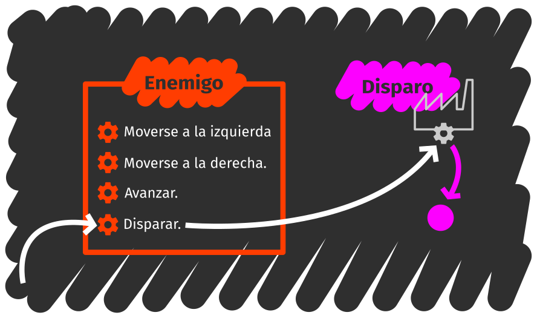
Relaciones entre tipos
Durante el modelado surgen relaciones de forma natural. Los enemigos tienen una posición. La nave amiga crea disparos.
Como es natural entre las personas, tenderás a establecer jerarquías entre objetos creando tipos más generalistas. Por ejemplo: en vez de pensar en enemigos y protagonista por separado, es posible pensar en naves.
El tipo nave reune los métodos y atributos comunes de la nave protagonista
y enemigos.
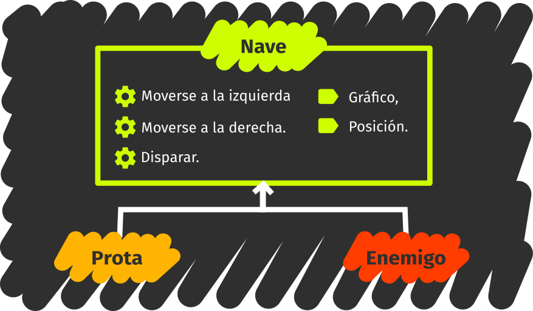
Esta jerarquía establece relaciones de herencia tambén llamadas relaciones
"es un(a)" dado que el protagonista es una nave y el enemigo es una
nave también.
Se dice que el tipo enemigo extiende al tipo nave añadiendo avanzar a la
API, así como la puntuación y la última dirección de desplazamiento al estado.
La nave amiga no añade ningún método nuevo pero redefine o sobreescribe el
método disparar para que dispare hacia arriba.
Como hay nuevos tipos, necesitarás nuevos constructores. Los viejos constructores pueden delegar parte de la creación del objeto (las partes comunes) a los nuevos.
De esta forma, al pedir un enemigo, el constructor de enemigos pedirá una nave al constructor de naves. Luego tomará esa nave, la modificará para que sea un enemigo y devolverá un enemigo.